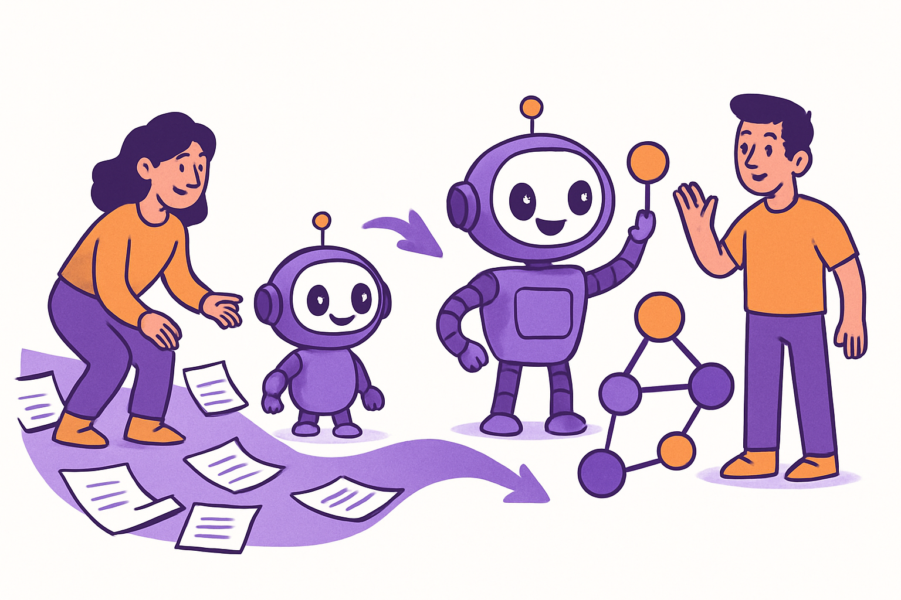
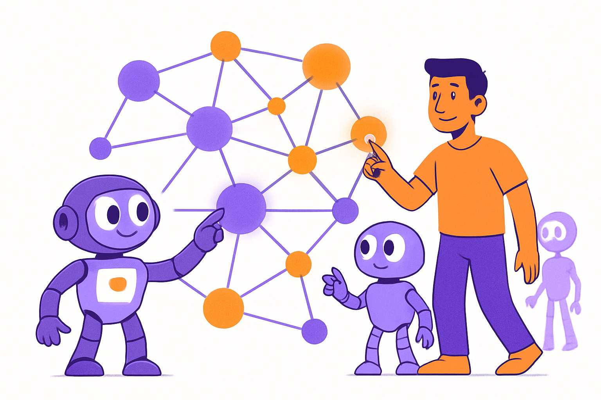

PLAI / FREE GIFT — VAULT TEMPLATE
2026 EDITIONObsidian Vault
テンプレート。
PLaiが実際に運用している、会社×AI×案件×記憶の階層構造を、
そのまま使える形でお渡しします。
WHY VAULT
AIの差は、
モデルではなく構造で決まる。
どのモデルを使うかより、AIが参照できる「構造化された記憶」をどう設計するか。それが、AIを「使う側」と「使われる側」を分ける。
ABOUT THIS TEMPLATE
プロンプトは一時的。構造は永続的。

本テンプレが提供するもの。
PLaiが日々運用している Obsidian Vault のディレクトリ構造、各層に置く _RULE.md / CLAUDE.md / SKILL.md のパターン、そしてAIエージェントが迷わず動くためのナビゲーション設計を、約30枚のスライドで体系的に公開しています。
そのまま自社のVaultとして再構築できます。
TOP LEVEL
ルート直下、たった6つのディレクトリ。
ルートを「層」で分け、それぞれが独立した責務を持つように設計します。
SECTION 01
階層設計の
5つの層。
層ごとに役割を分ければ、AIが迷わない。
LAYER 01 — META RULES
00-rules / メタルール層。

「全体の運用方針」をひとまとめに。
すべての業務・スキル・プロジェクトに共通する「やり方の標準」をここに置く。役職別のRULE、プロジェクトのライフサイクル、メモリ管理、スキル作成ガイドなど、横断ルールが集まります。
- 各C-suite役職のRULE
- plai-knowledge-layout.md（会社構造ガイド）
- project-lifecycle.md（案件の進め方）
- deliverable-flow.md（成果物の保存ルール）
- skill-creation.md（スキル新規作成手順）
LAYER 02 — PRIVATE
01-private / 個人領域。
家族・健康・経歴・住所・連絡先など、会社業務と分離したい情報を集約。AIがプライベートな文脈で動く時の参照先。
LAYER 03 — COMPANY KNOWLEDGE
02-company_knowledge / 会社情報層。
会社の存在自体に紐づく情報を集約。プロダクト・事業内容・パートナー企業・進行中プロジェクトなど。
LAYER 04 — AI DEPARTMENTS
03-AI_departments / AI部署層。

AIを「役職」として組織化する。
業務を担うAIエージェントを、人間の組織と同じ役職構造で配置。CEO・CMO・CTO・CSO・CFO・CHRO の各層が、それぞれの責任範囲を持ちます。
各部署配下は knowledge/ + skills/ + output/ の3点セットで統一。
LAYER 05 — MEMORY HUB
memory/ と MEMORY.md / 中央ハブ。
AIが「どこに何があるか」を最初に確認するインデックス。会社・人・事業・スキル・最新の意思決定への入口。
SECTION 02
_RULE.md パターン。
階層ごとに置く「迷子防止のハブファイル」。
_RULE.md PATTERN
各ディレクトリ直下に置く、迷子防止のハブ。

3つの役割。
- このディレクトリで何が扱われているかの説明
- サブディレクトリへの誘導（どこを見ればいいか）
- 命名規約・運用ルール
AIエージェントは _RULE.md を辿ることで、奥のファイルにたどり着く設計です。
_RULE.md EXAMPLE
記述例。
# 02-company_knowledge / 株式会社PLai 配下の使い方 ## 何が入っているか - 会社・事業・人員・案件・協業先の情報 - 公式サイト関連の制作物 ## 探し方 1. AI業務 → `01-Business content/` 2. 進行中案件 → `03-Project/<slug>/` 3. パートナー企業 → `04-Partner company/<company>/` 4. 会社の人 → `02-People/` ## 命名規約 - ディレクトリ: 数字プレフィックス（00-, 01-, ...） - ファイル: 日本語OK、ただし `_RULE.md` だけは固定
SECTION 03
CLAUDE.md パターン。
AIの動作を定義する、永続的な指示書。
CLAUDE.md PATTERN
「毎回同じ説明」をゼロにする。

役割。
AIが「このプロジェクトでどう振る舞うべきか」を最初に読み込むファイル。技術スタック・命名規約・トーン・避けるべき行動などを宣言型で書きます。
毎回のチャットで同じ前提を伝え直す必要がなくなる。
CLAUDE.md EXAMPLE
記述例（PLai HP プロジェクト）。
# PLai 公式サイト 開発ルール ## スタック - 静的HTML/CSS/JS、フレームワーク不要 - Cloudflare Pages にmainブランチpushで自動デプロイ ## 命名規約 - 業務ページ: `business-<slug>.html` - 記事: `articles/<slug>.html` ## 避けること - mp4をgit追加（GitHub 100MB制限）→ ffmpegで圧縮 - 絵文字の多用（PLaiブランドは禁欲的） - スライドが16:9を超える縦オーバーフロー
SECTION 04
部署 × スキル
の設計。
knowledge / skills / output の3点セット。
DEPARTMENT STRUCTURE
部署配下を統一すれば、再利用が走る。
AI ROLE MAP
人間の組織図、そのままAIに。
CEO
代表取締役
事業ポートフォリオ、GO/NO-GO判断、AI従業員間の調整、重要決定の記録。
CMO
最高マーケティング責任者
マーケ全チャネル整合、X運用方針、コンテンツ・キャンペーン設計。
CTO
最高技術責任者
実装・コード・デプロイ・技術選定・バグ修正・LP決済まで技術全般。
CSO
最高営業責任者
新規提案・既存顧客・提携・パイプライン管理・受注後の引き渡し。
CFO
最高財務責任者
経費・売上整理、Gmail起点の取引、請求書作成、確定申告準備。
CHRO
最高人事責任者
人員一覧・役割・特性、組織図、採用基準、オンボーディング。
SKILL.md PATTERN
「動く手順書」を、AIが読める形に。

スキルの単位とは。
1つのスキルは「自己完結した手順」です。実行に必要な入力・出力・参照ファイル・成果物の保存先までを SKILL.md に書きます。AIはこの1ファイルから全工程を再現できます。
- 用途（いつ起動するか）
- 必要な入力
- 実行ステップ
- 出力先（output/archive/）
OUTPUT MANAGEMENT
成果物は、スキル内 output/archive/ に。
「どこに何を保存したか分からなくなる」を防ぐ最重要ルール。すべての成果物は、それを生成したスキル直下の output/archive/ に置きます。
SECTION 05
MEMORY.md
の設計。
「最初に開くべき1ファイル」をどう書くか。
MEMORY.md
中央インデックスの構造。

含めるもの。
- 「自分」のプロフィール（連絡先・所属など）
- 所属会社一覧と各社のハブパス
- AI従業員（役職）マップ
- OpenClawチャットで言いそうな語 → 事業マップ
- 探索の型（短く）
- 姉妹会社・関連プロジェクト
MEMORY.md EXAMPLE
「言いそうな語 → 事業」対応表。
# OpenClawで市岡が話している話題 → どの事業か当てる
| 事業 | 言いそうな語 | 最初に読む |
|---|---|---|
| X運用・AirCle | AirCle / @aircle_ai / 学生AI団体 | …/X運用/AirCle/_RULE.md |
| X運用・個人 | いち / @ichiaimarketer | …/X運用/いち-OpenClawガチ勢/_RULE.md |
| OpenClawローンチ | 5DAYS / 8週間WS / 有料講座 | …/OpenClawローンチ/_RULE.md |
| Genspark協業 | Genspark / AI検索 | …/04-Partner company/Genspark/_RULE.md |
SECTION 06
AIへの
渡し方。
構造があれば、AIは迷わず動く。
NAVIGATION PATTERN
AIが「正解のファイル」に辿り着くまで。
MEMORY.md を読む
中央ハブで全体像と「何の話か」の当たりをつける。
事業マップから _RULE.md を開く
該当事業/会社のハブファイルへジャンプ。階層を1段降りる。
_RULE.md の指示に従って実体に到達
投稿フォルダ・skills・knowledgeなど、目的のファイルに到達。
SKILL.md を起動して成果物を output/archive/ に保存
スキル単位で完結。成果物は必ずスキル直下に残る。
SECTION 07
運用例。
「実際にこう動かしている」3例。
EXAMPLE 01 — INVOICE
請求書作成の動かし方。

5分で完成。
「○月分の請求書を作って」と指示すると、CFOロールが起動。`contacts-master.md` から振込先を引き、`skills/01-invoice-creation/SKILL.md` のテンプレに従ってPDFを生成→ output/archive/2026-05/ に保存→メール送付ドラフトまで完成。
EXAMPLE 02 — X POST
X投稿バズ生成の動かし方。
1パイプラインで8アカウント並列。
各アカウントのCLAUDE.md（人格設定）+ knowledge/ のバズ構文ライブラリ + 最新のバズソース収集結果から、AIが自動で投稿を生成。output/archive/ に保管。担当者は最終チェックのみ。
EXAMPLE 03 — SLIDE DECK
会社紹介スライド生成の動かし方。

本資料もこの仕組みで作っています。
slide-creator スキル直下の `06-plai-web-deck/SKILL.md` を起動し、サイト画像・X API・MEMORY.md から最新値を取得。output/archive/ にHTMLが保存され、plai-new-site/decks/ にコピーすればそのまま公開可能。
GET STARTED
自社で再現する、4ステップ。
Obsidian Vault を新規作成
プロジェクトフォルダをVaultとして開き、Markdownのみで運用開始。
本資料のディレクトリ構造をコピー
00-rules / 01-private / 02-company_knowledge / 03-AI_departments / memory / archive の6層を用意。
各層に _RULE.md と CLAUDE.md を配置
最初は最小限の内容でOK。AI運用しながら追記していく。
MEMORY.md にハブを作る
「自分」「会社」「事業マップ」「探索の型」をMEMORY.mdに書けば、AIが迷わず動く。
NEXT STEP
Vaultを「自社のOS」にしませんか。
PLai では、このVault構造の構築代行・運用伴走を「組織ナレッジ構築代行事業」として提供しています。
30分の無料相談で、貴社にとっての最小成功スコープから一緒に決めましょう。